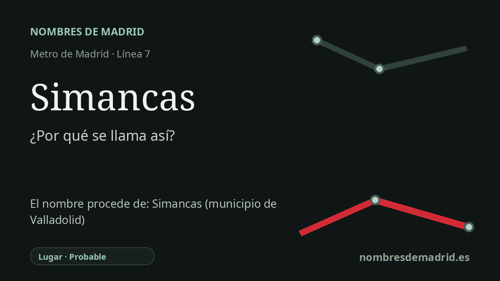

Publicado el · Investigación de Nombres de Madrid · Cómo verificamos cada origen · 6 fuentes consultadas
Respuesta rápida
La estación de Simancas lleva el nombre del barrio madrileño al que da servicio. Ese nombre remite en último término a Simancas, en Valladolid, una villa castellana histórica cuya forma antigua, Septimanca, es muy temprana pero de etimología incierta.
La historia del nombre
La estación de Simancas lleva el nombre del barrio madrileño de Simancas. Una ficha municipal sobre una fotografía de 1991 procedente del archivo de Metro de Madrid indica que la estación se abrió al público en julio de 1974 como parte del primer tramo de la línea 7 y que presta servicio a Amposta y Simancas, barrio del que toma el nombre.
Detrás del nombre del barrio madrileño está el topónimo más antiguo Simancas, reconocible sobre todo por la villa de Valladolid. La localidad vallisoletana se sitúa cerca del Pisuerga y tiene una relevancia histórica suficiente para que su nombre haya pasado a calles, barrios e instituciones fuera de la propia villa.
El origen más profundo no es la frase pintoresca que suele repetirse en la leyenda. Toponomasticon Hispaniae da como étimo Septimanca y considera habitual identificar la Simancas actual con la Septimanca del Itinerario de Antonino. También advierte que el nombre probablemente es una adaptación latina de una palabra anterior, celta o indoeuropea, de significado desconocido, aunque las grafías medievales favorecieron después la asociación con el latín septem, 'siete'.
De esa asociación nació la famosa historia de las siete doncellas mancas: siete jóvenes que supuestamente se cortaron una mano para no ser entregadas como tributo. La tradición sigue presente culturalmente en Simancas, y el ayuntamiento describe celebraciones vinculadas a la leyenda de las 'sietemancas', pero debe contarse como tradición y etimología popular, no como origen lingüístico demostrado.
La Simancas vallisoletana importa además por dos hechos históricos bien asentados. Cerca de la villa, en 939, Ramiro II de León derrotó a las fuerzas cordobesas de Abderramán III en la batalla de Simancas; más tarde, el castillo de la localidad se convirtió en el Archivo General de Simancas, gran archivo de la Monarquía Hispánica. Para la estación madrileña, sin embargo, la capa directa del nombre es local y urbana: la parada de Metro se llama así por el barrio madrileño, mientras que el barrio arrastra consigo el viejo topónimo castellano.